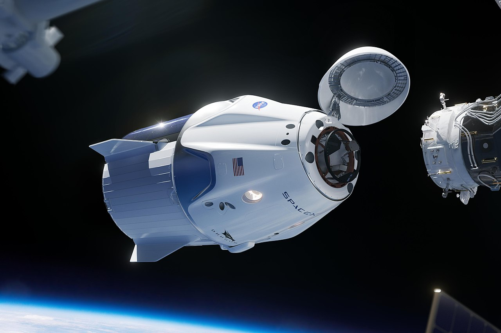

La NASA contrató a SpaceX para que sea el "taxi" que ponga en órbita a los pilotos Doug Hurley y Bob Behnken,quienes viajarán a bordo de la cápsula Crew Dragon, que a su vez es impulsada por el cohete Falcon 9.
El nombre de la misión es Demo 2 y, tras ser pospuesta el miércoles, está prevista para el sábado a las 3:22 p.m. (20:22 GMT)desde Cabo Cañaveral,en Florida, Estados Unidos.Demo 2 representa el regreso de los lanzamientos espaciales tripulados desde suelo estadounidense desde 2011,cuando terminó la era de los transbordadores.
La misión, además, marca un hito y puede ser el comienzo de la era de los viajes espaciales comerciales, en los que una empresa privada podrá llevar al espacio a cualquiera que esté dispuesto a pagar un pasaje.
Elon Musk, cofundador de PayPal y Tesla, creó SpaceX en 2002 en California, EE.UU. SpaceX nació con la idea de desarrollar el turismo espacial, pero la gran meta de Musk es que algún día los humanos logren colonizar Marte.
Esta será la primera vez que SpaceX lleve personas al espacio. Antes ya había hecho envíos de reabastecimiento a la Estación Espacial Internacional y lanzamiento de satélites comerciales.En 2018, al mejor estilo cinematográfico de Musk, SpaceX envió al espacio un auto Tesla.
SpaceX no es la única compañía en la carrera de vuelos comerciales al espacio. Boeing, Virgin y Blue Origin, de Jeff Bezos, también compiten en ese mercado, pero SpaceX logró algo que los pone en ventaja.
La compañía fue la primera en lograr que sus cohetes regresaran a la Tierra después de un lanzamiento, lo que permite que sean reutilizables y, a su vez, disminuyan enormemente los costos de una misión espacial. Para la NASA es clave poder realizar lanzamientos más baratos, por eso tiene interés en estimular un mercado de vuelos comerciales al espacio.
"La NASA será un cliente"dijo Jim Bridenstine, administrador de la NASA, refiriéndose a su relación con SpaceX.
"Si continuamos usando impuestos de los estadounidenses nunca volveremos a la Luna ni llegaremos a Marte".
Así, incluir a empresas privadas y tercerizar el traslado de tripulantes y mercancías a la EEI es un paso necesario para poder financiar el programa.
Se calcula que el contrato con SpaceX le puede estar ahorrando a la NASA cerca de US$40.000 millones. La NASA le otorgó a la compañía de Musk un contrato de US$3.100 millones para el lanzamiento de sus misiones espaciales.Es difícil saber en cuánto está valorada SpaceX, porque al ser una empresa privada no está obligada a publicar sus libros financieros.Sin embargo, un reportaje de la cadena CNBC estima que a febrero de 2020 la compañía puede valer más de US$35.000 millones.
El martes, un día antes del planeado lanzamiento, Musk dijo que SpaceX recaudó US$346 millones en una ronda de financiación.
"Creo que es importante que nos convirtamos en una civilización espacial y que estemos entre las estrellas", dijo Musk en una rueda de prensa en 2019.
Si la misión de este miércoles tiene éxito, estará un paso más cerca de convertir la ciencia ficción en realidad.